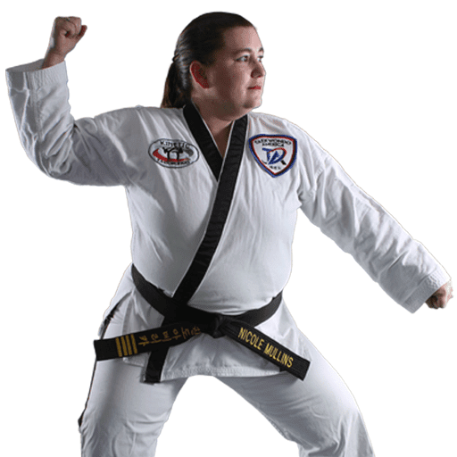
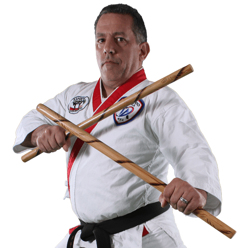

Taekwondo classes for kids, teens & adults. We build confidence, discipline, and self-defense skills — in a community that feels like family.
From tiny dragons to adults, every program is designed to meet your child (or you) exactly where you are.
Motor skills, listening, and fun — all wrapped in a gi. The perfect first step for your preschooler.
Get startedFocus, respect, self defense, and real confidence. Way better than another screen-time activity.
Get startedStress relief, discipline, and a crew that pushes them to be better. Teens love it here.
Get startedReal fitness. Real self defense. Zero boring gym reps. Train alongside your kids or come solo.
Get startedKinetic Taekwondo isn't a franchise — it's a family. Run by two people who've dedicated their lives to helping others get up, get moving, and reach their goals.

Senior 4th Degree Black Belt · 25+ Years Training · 15 Years Teaching
Ms. Mullins is the driving force behind everything that happens on the mat at Kinetic. A Senior 4th Degree Black Belt who's still actively training toward her 5th Degree, she brings over 25 years of martial arts experience and 15 years of dedicated teaching to every single class.
What sets her apart isn't just her technical skill — it's her ability to see every student as an individual. Early in her career, she spent several years teaching at a physical therapy office, where she discovered a passion for creating customized programs for students with all types of abilities and disabilities. That experience shaped the philosophy she brings to Kinetic every day: no matter who you are, no matter where you're starting from, there's a path forward for you on this mat.
It's why the Kinetic motto is "Get up and get moving — you can reach your goal." Ms. Mullins doesn't just say it. She lives it. She's the instructor who remembers every student's name, celebrates every small win, and shows up with the same energy on day one thousand as she did on day one.

2nd Degree Black Belt · Emergency Nurse · 10+ Years in the ER
Mr. Ortman is the other half of Kinetic — the one keeping the lights on, the schedule running, and the front desk organized while Ms. Mullins is working magic on the mat. As a 2nd Degree Black Belt and co-owner, he handles sign-ups, operations, the website, and everything behind the scenes that makes the school run smoothly.
But Kinetic isn't his only calling. When he's not at the dojo, Mr. Ortman is saving lives as an Emergency Department nurse — a role he's held for over a decade. The ER taught him how to stay calm under pressure, how to connect with people in their hardest moments, and how to help them get back on their feet. Sound familiar? It's exactly what happens at Kinetic, just in a different uniform.
His whole life — both at the hospital and at the dojo — is built around the same mission: helping people get up and get moving again. He fits right in with the Kinetic family because, honestly, he helped build it.
"Get up and get moving — you can reach your goal."
That's not just a motto. It's a promise.We've been building kids up in Fort Mill for over 25 years. Here's what parents notice first.
Kids who struggled to pay attention in school start showing up differently after just a few weeks.
Belt by belt, your child builds belief in themselves. You'll see it at home and at school.
Real skills to protect themselves — not just choreography. We teach what actually works.
We're goofy, warm, and tight-knit. We even came to students' homes during COVID shutdowns.
"Our son does Tae-kwon-Do here and loves his training. Master O is such a positive force in his life and is a true leader for these young kids. He teaches them hard work, respect and goal attainment. He cares for every one of the kids in the class. Our son had made a huge improvement in his behavior since enrollment almost a year ago. Check it out, you will not be disappointed!"
"Nicole and Paul are amazing! They have been so helpful and gone above and beyond with all our kids, and us adults. They are very personable, knowledgeable, and great teachers. They even came to our house to teach in our yard when C-19 shut down the school."
"Very dedicated owner/instructor. She has 25 years experience and is very knowledgeable in her skills. Great place for children and adults to learn taekwondo."
"Fun and engaging classes for all. The instructors have a great way with children and adults alike. Five stars aren't enough!"
"The instructors know just how to interact with the kids to make it not only fun for them but also teaches them to show respect, honor, and discipline."
"I had the great pleasure of watching their teaching and outstanding conversation. Also, they have a passion to teach the art."
"If you are looking for a place to train for all ages, this is it!"
No commitment. No uniform needed. Just show up in comfortable clothes and see if your family loves it.
Claim Your Free Class →Fill this out and we'll reach out within 24 hours to schedule your visit.
We'll never share your info. Reply STOP to cancel texts anytime.